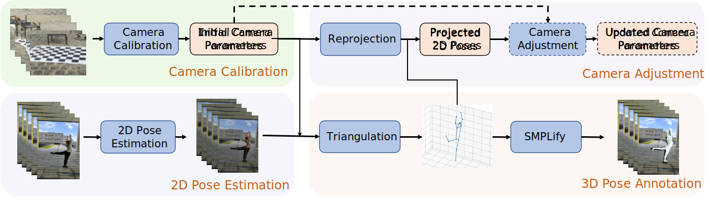

Jiong WANG*1,
Fengyu Yang*1,
Wenbo Gou1,
Bingliang Li1,
Danqi Yan1,
Ailing Zeng3,
Yijun Gao2,
Junle Wang2,
Ruimao Zhang1, †
The Chinese University of Hong Kong (Shenzhen)1,
Tencent2, IDEA3
*Indicates Equal Contribution; †Indicates Corresponding Authors
Overview

| Dataset | Environment | #Subject | #Action | #Scene | #Sequence | #Frame | #Camera | FPS |
|---|---|---|---|---|---|---|---|---|
| HumanEva | Laboratory | 4 | 6 | 1 | 168 | 80K | 7 | 30 |
| CMU Panoptic | Laboratory | 8 | 5 | 1 | 65 | 154M | 31 | 30 |
| MPI-INF-3DHP | Real Scene | 8 | 8 | 1 | 16 | 1.3M | 14 | 30 |
| 3DPW | Real Scene | 7 | 47 | 4 | 60 | 51K | 1 | 30 |
| Human3.6M | Laboratory | 9 | 15 | 1 | 840 | 3.6M | 4(Fixed) | 30 |
| AIST | Laboratory | 30 | 10 | 1 | 1408 | 10.1M | 9(Fixed) | 30 |
| HuMMan | Laboratory | 1000 | 500 | 1 | 400K | 60M | 11(Fixed) | 30 |
| HuMMan-Released | Laboratory | 132 | 20 | 1 | 4466 | 278K | 11(Fixed) | 30 |
| FreeMan | Real Scene | 40 | 123 | 10† | 8000 | 11.3M | 8(Movable) | 30/60 |
Pose annotation pipeline
More examples for Data and Annotations can be found in corresponding pages.
Paper (Arxiv)
If you find FreeMan useful and used it in your research, please cite our paper.
Download
 FreeMan dataset is open-sourced under the license of CC-BY-NC-4.0 and is for Research Purpose ONLY. No commercial usage is allowed.
FreeMan dataset is open-sourced under the license of CC-BY-NC-4.0 and is for Research Purpose ONLY. No commercial usage is allowed.
To download FreeMan data, users are required to complete following steps. Detailed instructions in Download page.
1. Download and sign the dataset usage agreement.
2. Complete the Application Form or 申请表格 for information backup.
3. Submit an access application on data host platform: Huggingface or OpenXLab(Coming).
Data Structure
FreeMan consists of 2 subsets corresponding to 30FPS & 60FPS, respectively. Each subset data includes RGB videos,
camera parameters, 2D & 3D human keypoints, SMPL parameters, bounding boxes. File structure is shown as below.
Data are grouped into different folders by data types.
yyyymmdd_xxxxxxxx_subjNN is the unique name for each session. yyyymmdd refer to capture date, xxxxxxxx refer to uuid of the session, NN refer to subject id.
Details can be found in Documentations.
FreeMan
├── 30FPS
│ ├── bbox2d
│ │ ├── yyyymmdd_xxxxxxxx_subjNN.npy
│ │ └── ...
│ ├── keypoints2d
│ │ ├── yyyymmdd_xxxxxxxx_subjNN.npy
│ │ └── ...
│ ├── keypoints3d
│ │ ├── yyyymmdd_xxxxxxxx_subjNN.npy
│ │ └── ...
│ ├── motions
│ │ ├── yyyymmdd_xxxxxxxx_subjNN_view0.npy
│ │ ├── ...
│ │ ├── yyyymmdd_xxxxxxxx_subjNN_view8.npy
│ │ └── ...
│ ├── cameras
│ │ ├── yyyymmdd_xxxxxxxx_subjNN.json
│ │ └── ...
│ └── videos
│ ├── yyyymmdd_xxxxxxxx_subjNN
│ │ └── vframes
│ │ ├── c01.mp4
│ │ ├── ...
│ │ └── c08.mp4
│ ├── ...
├── 60FPS
│ ├── ...
License & Statement of Responsibility
FreeMan dataset is released under the Creative Commons Attribution-NonCommercial-ShareAlike 4.0 International License.
All actors involved in the work are recuited on basis of voluntary and well informed of data collection and usage. Personal information of actors are disclosed.
Team Members
Jiong Wang,
Fengyu Yang
Co-First authors. This work is done when Jiong is an MPhil student and Fengyu is an Msc student supervised by Prof. Ruimao Zhang at The Chinese University of Hong Kong (Shenzhen).
Wenbo Gou, Danqi Yan, Bingliang Li
This work is done when they are research assistant at the research group supervised by Prof. Ruimao Zhang.
Bingliang is also Msc student at School of Data Science, The Chinese University of Hong Kong, Shenzhen.
Ailing Zeng
Dr. Zeng is affiliated with IDEA and she serves as a technical advisor in this project.
Yijun Gao,
Junle Wang
Mr. Gao and Dr. Wang are affiliated with TEG, Tencent. Yijun provides support on data collection tools and Junle is the leader of team in Tencent. Thanks for their support.
Ruimao Zhang
Prof. Zhang is the corresponding author of this work. He's also the supervisor of students participating in this work.
Contact Us
E-mail: jiongwang@link.cuhk.edu.cn, zhangruimao@cuhk.edu.cn
Address: Daoyuan Building, The Chinese Univeristy of Hong Kong, Shenzhen